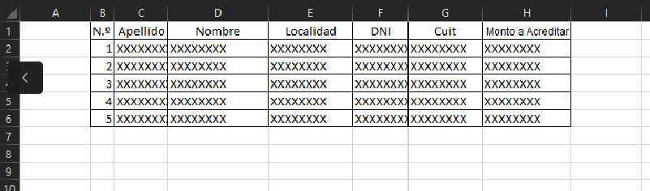

AYUDA
GENERAR ALTAS NUEVAS
- Subir el archivo ALTAS.xlsx.
- Menu - Beneficiarios - Procesar Excel (Altas.xls)
- El mismo posee el siguiente formato
- Apellido-Nombre-Domicilio-Calle Domicilio-Numero Domicilio-Piso Domicilio-Departamento-Localidad-Provincia-Sexo-Codigo-Postal-Telefono Caracteristica-Telefono Numero-Estado Civil-Fecha Nacimiento-Tipo Documento-Numero Documento-Prov. Documento-CUIT/CUIL
- Respetando el Formato del Anexo 1 - Novedades de Altas de Tarjetas Precargadas Del Manual Cabal
- Menu - Beneficiarios Generar ALTAUSUCBPRE
- Copiar los datos generados en pantalla a un archivo de texto (notepad++) y agregar un salto de linea al final. Debe de hacerce en windows ya que son diferentes los archivos generados entre Linux/Windows.
- Subir ese archivo a la plataforma de cabal con el nombre ALTAUSUCBPRE.782
- La plataforma responde con un archivo del tipo 782_out_altas_tpc_202207XX_XXXX_XXXXXX Que se procesa en el siguiente paso
PROCESAR NOV. ALTAS
- En este archivo se encuentran los datos de la nueva tarjeta, incluyendo Numero Cuenta y Numero Tarjeta
- Descargar desde plataforma el archivo 782_out_altas_tpc_202207XX_XXXX_XXXXXX
- Renombrar el mismo a MovAltas.txt
- Subir el archivo MovAltas.txt
- Menu - Beneficiarios - Procesar MovAltas.txt (Dev. Banco)
- Se cargan los beneficiarios en la BD, se debe de exportar desde phpmyadmin a excel.
GENERAR ACREDITACIONES DE SALDO (Este archivo con este formato lo envian desde Suministros con pequeños cambios)
- Modificacr y Generar el archivo Acreditaciones.xlsx
- El Mismo debe de Tener el siguiente formato
- Id-Apellido-Nombre-Localidad-DNI-CUIT-Monto a Acreditar
- Subir el archivo Acreditaciones.xlsx - En el formato de abajo, no lleva el total en la ultima fila
- ASI ES EL ARCHIVO FINAL

- Menu - Acreditaciones - Procesar Excel (Acreditaciones.xlsx)
- Menu - Acreditaciones - Generar NOVCAR
- Copiar los datos generados en pantalla a un archivo de texto (notepad++) y agregar un salto de linea al final. Debe de hacerce en windows ya que son diferentes los archivos generados entre Linux/Windows.
- Subir ese archivo a la plataforma de cabal con el nombre NOVCAR.782
- La plataforma responde con un archivo del tipo 782_RCAR_20220731_1841_324794.txt Que se procesa en Procesar Respuesta Acreditaciones
PROCESAR RESPUESTA DE ACREDITACIONES
- Descargar desde Plataforma Archivo del tipo 782_RCAR_20220731_1841_324794.txt
- Este archivo se el dia que se realiza la acreditacion en las cuentas de los beneficiarios
- Renombarar el archivo descargado a RespuestaCargas.txt
- Subir el archivo RespuestaCargas.txt
- Menu - Procesar RespuestaCargas.txt (Dev. Banco)
- se Mostrara en Pantalla las Cargas de Credito Realizadas
PROCESAR MOVIMIENTO DE CUENTAS
- Descargar desde Plataforma Archivo del tipo 782_Nacion_20220731_1841_324794.txt
- Este archivo se sube a la misma El ultimo dia Habil de Cada Mes (o El 1er Dia Del Mes Siguiente
- Renombrar el archivo descargado a Movimientos.txt
- Subir el archivo Movimientos.txt
- Menu - Movimientos - Procesar Movimientos.txt
- Seleccionar el Mes al que corresponden los movimientos
- Si el mes seleccionado ya esta cargado, genera un mensaje de error y no permite nuevamente la carga
- Se graban los datos a la tabla movimientos, exportar la misma a CSV For Ms excel
PROCESAR MAESTRO PLASTICOS
- Descargar el Archvio MAESPLASXXXXX.txt desde la plataforma
- Subir el archivo con el nombre MAESPLA.txt
- Copiar el Nombre de Archivo, ya que se solicitara el nombre original para poder realizar la carga
- Ir al Menu Maestros Tarjetas - Procesar Maestro Tarjetas
Descarga Saldos Cuentas
- Subir el archivo con el nombre DescargaSaldos.xlsx
- El Archivo debe de contener las siguientes filas 1 - id 2 - CUIT 3 - DNI 7 - Nombre 5 - Monto a Descargar
- Ir al Menu Descarga Saldos - Procesar Descargas